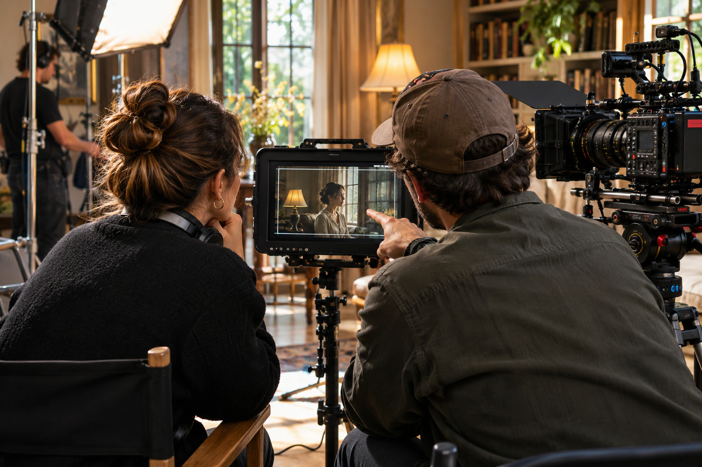

01 / Story
01 / StoryStart with a feeling.
A performance, a question, a moment that stays with you. The emotional centre gives every visual decision a purpose.
Frame 1 of 4/04
From the first idea
to the final frame.
Different frames. Different ways of seeing. Explore the collection in your own way.
Collection includes illustrative studies; these are marked as concepts.
A curated contact sheet. Select a frame to explore.
No projects in this category. Select All to explore the collection.
A point of view.
A purpose in every frame.

SK Films Productions
A look. A gesture. A world built around a single idea. We approach film through the relationship between story, light and the people inside the frame.
Inside the studioWhat matters is how it feels.
What lasts is the story.

01 / StoryA performance, a question, a moment that stays with you. The emotional centre gives every visual decision a purpose.
02 / ImageLight, composition and movement shape how a story is felt. The camera becomes a point of view, rather than a spectator.
 03 / People
03 / PeopleThe set is where preparation meets instinct. Direction, performance and craft work together inside the same frame.
A cut changes a look. A pause changes a scene. In the edit, pictures and sound find the rhythm of the film.
A point of view. A feeling. A film.
Tell us your story
01 / 04 02 / 0403 / 04
02 / 0403 / 04Pictures find their meaning in the space between them.
The frame is made by the people behind it.
The world around a character becomes part of the story.
A story begins with someone worth watching.
A considered production approach across film, commercial and visual experiences — shaped around the story.

Narrative films, drama and short-form storytelling — from first concept through production and finishing.
Explore this serviceCampaign and brand films built around a clear commercial story and its audience.
Explore this serviceComputer-generated visuals and VFX. Build imagery beyond what can be captured on set. Plan computer-generated elements and visual effects around the film, with attention to how practical footage and digital work come together.
Explore this serviceMotion graphics and 3D animation. Give ideas form through movement. Use motion graphics and three-dimensional animation to explain a product, develop a visual identity or create a distinctive film sequence.
Explore this service3D architectural renders and walkthroughs. Communicate a space before it is built. Explore the proposed architecture through renders and animated walkthroughs, with a considered approach to materials, lighting and atmosphere.
Explore this serviceArtist-led visual concepts and performance-driven production.
Explore this serviceDesign and branded digital content. Create a consistent visual voice across screens. Shape branded content and design for digital platforms, adapting the idea to the format and the way people will encounter it.
Explore this serviceEditorial rhythm, pacing and structure — assembling the story in the cut.
See concept framesLighting, lensing, movement and frame composition — the visual language of the film.
See concept framesObserved, real-world storytelling — from subject research to final cut.
See concept framesThe colour room / Concept study
Two treatments of the same illustrative frame. Drag the divider — or use the arrow keys — to compare.
Filmmaking is a collective craft. A space for the directors, cinematographers and creative collaborators behind SK Films.
Director names, biographies and approved portraits to be provided.
Five stages. One continuous story. A proposed production journey, from the first conversation to the final master.
Understanding the story, its objectives, the creative direction and the visual identity it should carry.
Script, storyboard, casting, locations and production logistics — every shoot day prepared before it happens.
Directing, cinematography, lighting and sound come together to capture the intended creative vision.
Editing, colour grading, sound design and finishing shape the film into its final form.
Review, refinement, mastering and delivery of the finished film in every format it needs to live in.
Original brand ident · Production showreel to follow
SK Films Productions
Tell us what you're imagining — the story, the audience, the moment it needs to land.